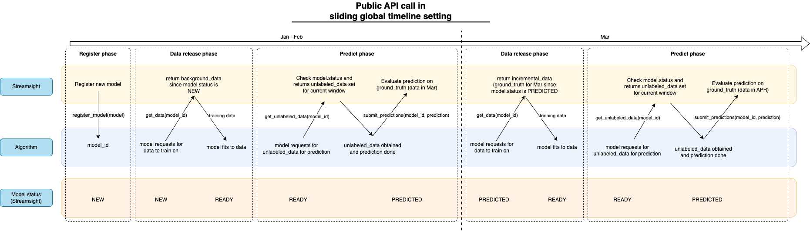

streamsight.evaluators.EvaluatorStreamer
- class streamsight.evaluators.EvaluatorStreamer(metric_entries: List[MetricEntry], setting: Setting, metric_k: int, ignore_unknown_user: bool = True, ignore_unknown_item: bool = True, seed: int | None = None)
Bases:
EvaluatorBaseEvaluation via streaming through API
The diagram below shows the diagram of the streamer evaluator for the sliding window setting. Instead of the pipeline, we allow the user to stream the data release to the algorithm. The data communication is shown between the evaluator and the algorithm. Note that while only 2 splits are shown here, the evaluator will continue to stream the data until the end of the setting where there are no more splits.

This class exposes a few of the core API that allows the user to stream the evaluation process. The following API are exposed:
The programmer can take a look at the specific method for more details on the implementation of the API. The methods are designed with the methodological approach that the algorithm is decoupled from the the evaluating platform. And thus, the evaluator will only provide the necessary data to the algorithm and evaluate the prediction.
- Parameters:
metric_entries (List[MetricEntry]) – List of metric entries
setting (Setting) – Setting object
metric_k (int) – Number of top interactions to consider
ignore_unknown_user (bool) – To ignore unknown users
ignore_unknown_item (bool) – To ignore unknown items
seed (Optional[int]) – Random seed for the evaluator
- __init__(metric_entries: List[MetricEntry], setting: Setting, metric_k: int, ignore_unknown_user: bool = True, ignore_unknown_item: bool = True, seed: int | None = None)
Methods
__init__(metric_entries, setting, metric_k)get_algorithm_state(algo_id)Get the state of the algorithm
Get the status of all algorithms
get_data(algo_id)Get training data for the algorithm
get_unlabeled_data(algo_id)Get unlabeled data for the algorithm
metric_results([level, ...])Results of the metrics computed.
Prepare evaluator for pickling.
register_algorithm([algorithm, algorithm_name])Register the algorithm with the evaluator
restore()Restore the generators before pickling.
Start the streaming process
submit_prediction(algo_id, X_pred)Submit the prediction of the algorithm
Attributes
Setting to evaluate the algorithms on.
Value of K for the metrics.
To ignore unknown users during evaluation.
To ignore unknown items during evaluation.
- _acc: MetricAccumulator
- _cache_evaluation_data() None
Cache the evaluation data for the current step.
Summary
This method will cache the evaluation data for the current step. The method will update the unknown user/item base, get the next unlabeled and ground truth data, and update the current timestamp.
Specifics
The method will update the unknown user/item base with the ground truth data. Next, mask the unlabeled and ground truth data with the known user/item base. The method will cache the unlabeled and ground truth data in the internal attributes
_unlabeled_data_cacheand_ground_truth_data_cache. The timestamp is cached in the internal attribute_current_timestamp.we use an internal attribute
_run_stepto keep track of the current step such that we can check if we have reached the last step.We assume that any method calling this method has already checked if the there is still data to be processed.
- _current_timestamp: int
- _evaluate(algo_id: UUID, X_pred: csr_matrix) None
Evaluate the prediction
Given the prediction and the algorithm ID, the method will evaluate the prediction using the metrics specified in the evaluator. The prediction of the algorithm is compared to the ground truth data currently cached.
The evaluation results will be stored in the micro and macro accumulators which will later be used to calculate the final evaluation results.
- Parameters:
algo_id (UUID) – The unique identifier of the algorithm
X_pred (csr_matrix) – The prediction of the algorithm
- _get_evaluation_data() Tuple[InteractionMatrix, InteractionMatrix, int]
Get the evaluation data for the current step.
Internal method to get the evaluation data for the current step. The evaluation data consists of the unlabeled data, ground truth data, and the current timestamp which will be returned as a tuple. The shapes are masked based through
user_item_base. The unknown users in the ground truth data are also updated inuser_item_base.Note
_current_timestampis updated with the current timestamp.- Returns:
Tuple of unlabeled data, ground truth data, and current timestamp
- Return type:
Tuple[csr_matrix, csr_matrix, int]
- Raises:
EOWSetting – If there is no more data to be processed
- _prediction_shape_handler(X_true_shape: Tuple[int, int], X_pred: csr_matrix) csr_matrix
Handle shape difference of the prediction matrix.
If there is a difference in the shape of the prediction matrix and the ground truth matrix, this function will handle the difference based on
ignore_unknown_userandignore_unknown_item.- Parameters:
X_true_shape (Tuple[int,int]) – Shape of the ground truth matrix
X_pred (csr_matrix) – Prediction matrix
- Raises:
ValueError – If the user dimension of the prediction matrix is less than the ground truth matrix
- Returns:
Prediction matrix with the same shape as the ground truth matrix
- Return type:
csr_matrix
- _transform_prediction(X_pred: csr_matrix | InteractionMatrix) csr_matrix
Transform the prediction matrix
This method is called to transform the prediction matrix to a csr_matrix. The method will check if the prediction matrix is an InteractionMatrix and if the shape attribute is defined. If the shape attribute is not defined, the method will set the shape to the known shape of the user/item base.
- Parameters:
X_pred (Union[csr_matrix, InteractionMatrix]) – The prediction matrix
- Raises:
ValueError – If X_pred is not an InteractionMatrix or csr_matrix
- Returns:
The prediction matrix as a csr_matrix
- Return type:
csr_matrix
- get_algorithm_state(algo_id: UUID) AlgorithmStateEnum
Get the state of the algorithm
This method is called to get the state of the algorithm given the unique identifier of the algorithm. The method will return the state of the algorithm.
- Parameters:
algo_id (UUID) – Unique identifier of the algorithm
- Returns:
The state of the algorithm
- Return type:
- get_all_algorithm_status() Dict[str, AlgorithmStateEnum]
Get the status of all algorithms
This method is called to get the status of all algorithms registered with the evaluator. The method will return a dictionary where the key is the name of the algorithm and the value is the state of the algorithm.
- Returns:
The status of all algorithms
- Return type:
Dict[str, AlgorithmStateEnum]
- get_data(algo_id: UUID) InteractionMatrix
Get training data for the algorithm
Summary
This method is called to get the training data for the algorithm. The training data is defined as either the background data or the incremental data. The training data is always released irrespective of the state of the algorithm.
Specifics
If the state is COMPLETED, raise warning that the algorithm has completed
If the state is NEW, release training data to the algorithm
If the state is READY and the data segment is the same, raise warning that the algorithm has already obtained data
If the state is PREDICTED and the data segment is the same, inform the algorithm that it has already predicted and should wait for other algorithms to predict
This will occur when
_current_timestamphas changed, which causes scenario 2 to not be caught. In this case, the algorithm is requesting the next window of data. Thus, this is a valid data call and the status will be updated to READY.
- param algo_id:
Unique identifier of the algorithm
- type algo_id:
UUID
- raises ValueError:
If the stream has not started
- return:
The training data for the algorithm
- rtype:
InteractionMatrix
- get_unlabeled_data(algo_id: UUID) InteractionMatrix | None
Get unlabeled data for the algorithm
Summary
This method is called to get the unlabeled data for the algorithm. The unlabeled data is the data that the algorithm will predict. It will contain (user_id, -1) pairs, where the value -1 indicates that the item is to be predicted.
Specifics
If the state is READY/PREDICTED, return the unlabeled data
If the state is COMPLETED, raise warning that the algorithm has completed
ALl other same, raise warning that the algorithm has not obtained data and should call
get_data()first.
- param algo_id:
Unique identifier of the algorithm
- type algo_id:
UUID
- return:
The unlabeled data for prediction
- rtype:
Optional[InteractionMatrix]
- ignore_unknown_item
To ignore unknown items during evaluation.
- ignore_unknown_user
To ignore unknown users during evaluation.
- metric_k
Value of K for the metrics.
- metric_results(level: MetricLevelEnum | Literal['macro', 'micro', 'window', 'user'] = MetricLevelEnum.MACRO, only_current_timestamp: bool | None = False, filter_timestamp: int | None = None, filter_algo: str | None = None) DataFrame
Results of the metrics computed.
Computes the metrics of all algorithms based on the level specified and return the results in a pandas DataFrame. The results can be filtered based on the algorithm name and the current timestamp.
Specifics
User level: User level metrics computed across all timestamps.
Window level: Window level metrics computed across all timestamps. This can be viewed as a macro level metric in the context of a single window, where the scores of each user is averaged within the window.
Macro level: Macro level metrics computed for entire timeline. This score is computed by averaging the scores of all windows, treating each window equally.
Micro level: Micro level metrics computed for entire timeline. This score is computed by averaging the scores of all users, treating each user and the timestamp the user is in as unique contribution to the overall score.
- param level:
Level of the metric to compute, defaults to “macro”
- type level:
Union[MetricLevelEnum, Literal[“macro”, “micro”, “window”, “user”]]
- param only_current_timestamp:
Filter only the current timestamp, defaults to False
- type only_current_timestamp:
bool, optional
- param filter_timestamp:
Timestamp value to filter on, defaults to None. If both only_current_timestamp and filter_timestamp are provided, filter_timestamp will be used.
- type filter_timestamp:
Optional[int], optional
- param filter_algo:
Algorithm name to filter on, defaults to None
- type filter_algo:
Optional[str], optional
- return:
Dataframe representation of the metric
- rtype:
pd.DataFrame
- prepare_dump() None
Prepare evaluator for pickling.
This method is used to prepare the evaluator for pickling. The method will destruct the generators to avoid pickling issues.
- register_algorithm(algorithm: Algorithm | None = None, algorithm_name: str | None = None) UUID
Register the algorithm with the evaluator
This method is called to register the algorithm with the evaluator. The method will assign a unique identifier to the algorithm and store the algorithm in the registry. The method will raise a ValueError if the stream has already started.
- Parameters:
algorithm (Algorithm) – The algorithm to be registered
- Raises:
ValueError – If the stream has already started
ValueError – If neither algorithm nor algorithm_name is provided
- Returns:
The unique identifier of the algorithm
- Return type:
UUID
- restore() None
Restore the generators before pickling.
This method is used to restore the generators after loading the object from a pickle file.
- setting
Setting to evaluate the algorithms on.
- start_stream()
Start the streaming process
This method is called to start the streaming process. The method will prepare the evaluator for the streaming process. The method will reset the data generators, prepare the micro and macro accumulators, update the known user/item base, and cache the evaluation data.
The method will set the internal state
has_startedto True. The method can be called anytime after the evaluator is instantiated. However, once the method is called, the evaluator cannot register any new algorithms.- Raises:
ValueError – If the stream has already started
- submit_prediction(algo_id: UUID, X_pred: csr_matrix | InteractionMatrix) None
Submit the prediction of the algorithm
Summary
This method is called to submit the prediction of the algorithm. There are a few checks that are done before the prediction is evaluated by calling
_evaluate().Once the prediction is evaluated, the method will update the state of the algorithm to PREDICTED.
The method will also check for each call if the current step of evaluation is the final one, if it is the final step, the method will update the state of the algorithm to COMPLETED.
Specifics
If state is READY, evaluate the prediction
If state is NEW, algorithm has not obtained data, raise warning
If state is PREDICTED, algorithm has already predicted, raise warning
All other state, raise warning that the algorithm has completed
- param algo_id:
The unique identifier of the algorithm
- type algo_id:
UUID
- param X_pred:
The prediction of the algorithm
- type X_pred:
csr_matrix
- raises ValueError:
If X_pred is not an InteractionMatrix or csr_matrix
{kind=link}